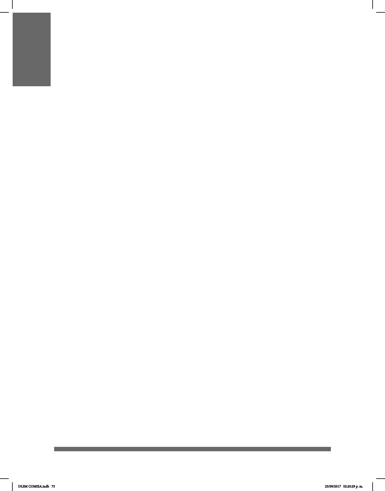

73
LA CONFIGURACIÓN MANUAL
Las manos son el principal articulador en las lenguas de señas, pero no el único. Por eso,
debe tomarse en cuenta que, además de ciertas orientaciones y lugares de articulación
en el espacio, existen las conguraciones manuales (CM), las cuales constituyen una
característica tanto de la mano dominante como de la no dominante.
En 1965, William Stokoe propuso, con base en el análisis de la Lengua de Señas
Americana (ASL), que las lenguas de señas pueden ser divididas en unidades
menores. Más adelante se concluyó que las señas pueden analizarse con base en seis
parámetros: conguración manual, lugar de articulación, movimiento de la mano,
dirección de movimiento, orientación de la mano y expresión de la cara.
Gracias a esta investigación, pudo apreciarse que las lenguas orales y las lenguas de
señas tienen un cierto grado de similitud ya que ambas cuentan con un inventario de
unidades mínimas que pueden combinarse de acuerdo con una serie de reglas; sin
embargo, hay una diferencia en la forma en la cual se combinan estas unidades pues en
las lenguas orales se presentan secuencialmente, mientras que en las lenguas de señas
se hace simultáneamente. No obstante, más adelante se reconoció que también debe
tomarse en cuenta la secuencialidad en el análisis de las lenguas de señas.
Por tanto, la CM es un rasgo distintivo que funge como componente interno en la
estructura de las lenguas de señas y que puede entenderse como la forma que adoptan
una o ambas manos.
En las CM se muestran los detalles que deben ser considerados al momento de realizar
una seña. Estos detalles tienen que ver con la posición de los dedos, por ejemplo: si
están unidos o separados, exionados o estirados; la orientación del pulgar y el índice; si
la mano se presenta abierta, en forma de garra, con el puño cerrado, etc.
La CM es considerada como un componente de la matriz articulatoria. Siguiendo esta
línea, las características de la CM están denidas por la actividad de la mano, los dedos
y el pulgar. De esto se distinguen dos grupos articulatorios: el primero corresponde a
la posición digital, que incluye a los dedos índice, medio, anular y meñique; al segundo
grupo corresponde la posición del pulgar debido a su autonomía con respecto a los otros
dedos. Esta división está basada en el movimiento, pues los dedos del primer grupo
suelen moverse en bloque, ya que pueden abrirse o cerrarse juntos, mientras que el
pulgar presenta mayor independencia en los movimientos debido a rasgos taxonómicos.
DLSM COMISA.indb 73 25/09/2017 02:20:29 p. m.